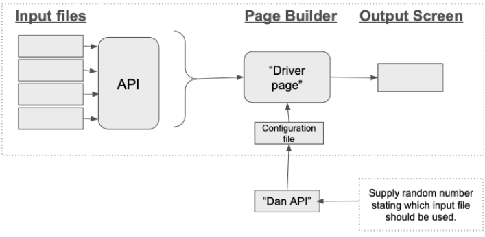

Project Description
Your team is tasked with creating an application that utilizes configuration files to display the content of a web page. This page is entirely driven by what is provided via the configuration files. There will be several primary components to this application. The basic flow of the application is:
Other requirements include:
- There are several data input files that are located on remote locations. An API is used to transmit the contents of the files. The APIs should dynamically transfer the item’s content (changing the file should automatically change what is transmitted via the API). Your team will host these files that your application should read in.
- The input files should be composed of json or XML files that are “fed” into the primary page via an API. You should create an API for each input file. So your application will be interacting with several possible API sources, not the actual files.
- A random number generator should be provided with an API. This random number will provide guidance regarding which input file should be used to construct the page.
- You should ensure that the application works using multiple browsers including Chrome, Firefox and Edge. You can use the browser versions that are installed on the lab computers.
- Requirements elicitation is important. Your team should work with the instructor to create the input files and the output page.
- The configuration file uses the information from the Input API to build the output screen which is shown to the user.
- To start, when displaying the page contents you only need to display the input using basic formatting with the information provided via the input files. However, you should confirm this requirement with the customer for R2.
- When displaying page “items”, you will be responsible for displaying the item type and provided options via the API.
- The items that will need to be displayed on the output page are:
- Paragraph:
- Dropdown box
- Radio button
- True/false
- Image ← only need to provide link to an image that is hosted in a different location, you do not need to host the file.
- Textbox
- Button
Notes
- You may use whatever technology stack that you would like. The focus of this project is in software engineering, not in technology. However, you will need to ensure that you are reasonably proficient with the selected technology.
- You can use external libraries, resources etc.. to complete your task. However, when using someone else's code substantially, please discuss this with your instructor prior to using it. You may not utilize code written by another development team however.
Some functional requirements include:
- The provided configuration files should entirely drive the page. Your "reader" should utilize the input configuration file as much as possible for determining page content.
- The application should handle malformed files gracefully. The application should never crash. For example, if the input files are malformed or the API is down, the application should gracefully handle this.
- APIs should be utilized whenever possible/reasonable. You are encouraged to discuss the architecture with your instructor.
- XML/JSON should be used to build the page. The structure of the page should be entirely driven by these input files.
- There are a number of input files that can be supported at any time. A main "Configuration" file will dictate the input file, source etc…. However, the page is expected to only support one input file at any given page load.
- The displayed page will ultimately be reasonably simple (see instructor example).
Some Non-functional requirements include:
- You are expected to utilize your team's Trello board for project management.
- Utilize GitHub for version control.
- Your application should be entirely hosted on Render.com. The application should be publicly accessible.
- Unit testing should be included in your project (speak with customer regarding magnitude & specifics).
- You should use GitHub issues for defect tracking.
- You should integrate an automatic testing/build mechanism with your hosting provider.
- All project artifacts should be accessible to your instructor. They will discuss mechanisms to share them. When you "submit" the application, you will be providing links to your team's Trello, running application on Render, GitHub repository etc…
Project Information
Development Languages
Students may select their preferred development language to implement the project. However, the technology stack MUST be approved by the instructor. Due to the nature of the project, the project team is heavily encouraged to select a web-based platform such as Node, Angular, etc…
Hosting Platform
For this project, your team is highly encouraged to utilize Render. This platform was selected due to its ease of use, being freely available for this project, having existing integrations into Github, and having a significant amount of existing support and documentation in place. Your customer (instructor) should merely have to visit the provided URL to utilize the created software.
Deliverables
The project deliverables are designed to support your group in incrementally building the application. This includes the support generation of “umbrella” activities. Essentially, these deliverables should support your team in constructing the product in a systematic manner, with regular customer (instructor) input. You should ensure that you include your customer (instructor) during the entire process.
Deliverable #1: Support Structure
Successful software projects typically require "umbrella" supporting activities. This helps your team manage the project, supports communication and helps with software code development. This deliverable will ensure that your team has begun to implement the necessary project management tools to ensure the project's success. The tools that your team should be using for this project include:
- Project Management: Trello
- Version Control: GitHub
- Defect Tracking: GitHub Issues
- Project Hosting: Render (feel free to discuss with instructor)
- Will also support automatic builds & deployments.
- Should automatically run your created unit tests.
- Specific deliverables: For this assignment, your team is to create accounts and make initial "commits" to each of these project support tools. For example, you should make example commits to GitHub, add several placeholder defects to GitHub issues and create a Trello board with initial actions. You should clarifiy any specific requirement questions with your instructor. In the appropriate MyCourses submission area complete this template. The purpose of this document is to provide a centralized, "one stop shop" for sharing all project information.
- Please make sure that your instructor has access to all of these materials.
Grading Rubric
| Component | Exceptional Performance 100 points | Competent Performance 88 points | Acceptable Performance 75 points | Developing Performance 50 points | Unacceptable Performance 0 points |
|---|---|---|---|---|---|
| Project Items | All tools utilized and commits made. | One tool not properly utilized/missing initial "commit". | At least two tools not properly utilized/missing initial "commit". | At least three tools not properly utilized/missing initial "commit". | At least four tools not properly utilized/missing initial "commit". |
Deliverable #2: Project Requirements & Test Plan Tracker
Project planning is imperative for providing a robust project foundation. This deliverable will provide an initial planning step for your work. All project documents are intended to be “living/breathing” documents that you update throughout the semester as needed, which is expected. While this initial submission is intended to change and evolve throughout the semester, you are still expected to provide robust documentation, with as many considerations as possible.
- You should update your team's project requirements document. You are expected to work with your customer (instructor) to clarify project requirements.
- You should create a test plan tracker that you will utilize to demonstrate and evaluate the project's proficiency.
I am providing you an incomplete requirements document. Your team is expected to update it as needed. In this specific instance, you should focus on updating the:
- Stakeholders
- Feature Requirements
- Use Case Diagrams
- Use Case Descriptions
[Link to Requirements Document]
Test Plan
- Create a Test Plan (based on the provided template).
- Write an acceptance test case for each of the features being delivered in Release 1.
- At minimum, your test case should reference the feature being tested; pre-conditions required to run the test, a test case description and expected results.
Grading Rubric
| Component | Exceptional Performance 100 points | Competent Performance 88 points | Acceptable Performance 75 points | Developing Performance 50 points | Unacceptable Performance 0 points |
|---|---|---|---|---|---|
| Test Plan (50%) | Robust test plan with an acceptance case written for each R1 deliverable, while containing complete test cases (pre/post conditions etc...) | Small amount of missing acceptance cases and/or incomplete test case components. | Several missing acceptance cases and/or incomplete test case components. However, more than 50% of each item is present. | More than half of test cases missing and/or test cases missing a majority of necessary components. | Missing deliverable and/or other very serious deficiency in deliverable. |
| Requirements (50%) | Requirements document is complete with both a robust number of requirements and robust details regarding each component. | Only a minor number of missing requirements and/or details in submission. | Less than 50% of components in requirements document submission have serious deficiencies/missing items. | More than 50% of components in requirements document submission have serious deficiencies/missing items. | Missing deliverable and/or other very serious deficiency in deliverable. |
Submission Instructions: Submit the completed test plan tracker and project requirements document to the submission area in Mycourses identified by your instructor.
Deliverable #3: Unit Testing
Unit testing is a fundamental practice in software development aimed at verifying the correctness of individual units or components of a software application. Each unit test focuses on a small, isolated piece of code, typically a function or method, ensuring it behaves as expected under various conditions. These tests are automated, allowing developers to run them frequently and catch potential issues early in the development process. Unit testing helps improve code quality, facilitates code maintenance, and provides a safety net for refactoring, ensuring that changes do not introduce unintended consequences. Adopting unit testing is a key aspect of Test-Driven Development (TDD), where tests are written before the actual code, guiding developers in designing robust and modular software. Overall, unit testing contributes to building more reliable and maintainable software systems.
To support your project's testing, you will create several “best of breed” unit tests for your project. Working with your instructor you should:
- Identify at least five unit tests that should be created for your application.
- Create these five unit tests, using "stubs" when necessary.
- Integrate these tests into your team's automatic build mechanism. For example, when “pushing” code, the unit tests should automatically run.
Other Notes:
- All unit tests should be checked into your team's version control repository.
- These unit tests should be updated throughout the semester.
Grading Rubric
| Component | Exceptional Performance 100 points | Competent Performance 88 points | Acceptable Performance 75 points | Developing Performance 50 points | Unacceptable Performance 0 points |
|---|---|---|---|---|---|
| Unit tests | At least five high-quality unit tests created, containing no serious deficiencies. Tests should also be "best of breed". | Four unit tests created and/or five unit tests created with minor deficiencies. | Three unit tests created and/or five unit tests created with minor deficiencies. | Two unit tests created and/or five unit tests created with minor deficiencies. | Less than two unit tests created/very serious deficiencies in created unit tests. |
Deliverable #4: Release 1 (R1)
This initial release will include having several portions of the application functional, while excluding some for future releases (see below). Additionally, this initial release will serve as an initial working foundation for your second upcoming release. While you should remain in regular contact with your customer (instructor), and you should seek clarification whenever possible - your primary deliverables for this Release 1 include:
- Developing the application's structure.
- Updating all previous submissions and documentation.
- A page that is constructed using a single JSON file to provide the page's structure. You can assume that the file is always perfect and that there is only a single file that you read from. In this order, the page's contents will include:
- A simple textbox
- An image (you will reference the image's location only)
- A dropdown list containing at least 5 items.
- Any other items specified by your instructor.
- The reading of this file should occur via a simple API.
- Note: The application must be entirely runnable from the Render environment. The customer (instructor) should only merely need to visit the provided URL to utilize the application. Demonstrations off of local computers will not be considered/allowed.
Your team's submission should be:
- "Tagged in your version control repository.
- Pushed to your hosting mechanism so that it is accessible through a web browser.
R1 Presentation
Your team's presentation should contain the following information:
- This is a technical presentation to other engineers in the company, as such, focus on the planning, design, construction, and testing approaches you used.
- Each team should plan on 10-12 minutes for the presentation (including any demo) and 5 minutes for questions.
- It is a good idea to have a few slides to talk off that include an agenda of topics to be covered.
- Every team member will participate in a significant way in the presentation.
- Give a short product demo of features you have completed (note that none of the project GUI components need to be shown for this release)
- Some things you should focus on:
- Show some metrics about bug tracking
- What has the rate of bugs been like. Have they increased or decreased?
- Number of open bugs. Why are they not resolved
- Anything else you find interesting....
- Your application's primary features. Demonstrate several use cases of your application.
- How have you utilized the project planning mechanisms (eg Trello, etc.)?
- The integration into the hosting mechanism (deployments, how automated testing works etc….).
Post Mortem Component
Reflect on the team's activities and performance through the project thus far. Capture these reflection thoughts in this template. You may address the items listed in the document, but feel free to add others the team believes significant. Submit the document as directed by your instructor. This is an individual assignment. I am looking for well thought out, and insightful reflections and observations about your team's and personal performances. I'd also like you to elaborate on possible solutions to any described problems. A good rule of thumb is for you to describe at least one area of improvement for every identified point of strength.
[Link to Post Mortem Template Document]
Grading Rubric
| Component | Exceptional Performance 100 points | Competent Performance 88 points | Acceptable Performance 75 points | Developing Performance 50 points | Unacceptable Performance 0 points |
|---|---|---|---|---|---|
| Application (70) | Application performs well from hosting environment with no reasonably major deficiencies. | Only reasonably minor deficiencies, primary functional is present. | Significant deficiencies that make major components of the application unusable. | A majority of the application's functionality is not usable and/or contains serious deficiencies. | Very little, if any of the application's primary functionally is present. Very serious deficiencies. |
| Presentation (10) | Team conducts an informative presentation that was easy to follow and ran without any problems. | Team conducts an informative presentation that was easy to follow, but there were a few minor issues noted. | Team appeared prepared for the presentation, but there were major issues with delivery. | Team did not appear prepared, but was able to conduct a low-quality presentation. | Minimal presentation conducted containing numerous profound issues. |
| Post Mortem (10) | The team provided a thoughtful and descriptive retrospective on its activities indicating areas of strength and for improvement. | The team provided a good retrospective that had a complete description of areas of strength and for improvement. | The team provided a retrospective that could have been more in depth in its indication of strengths and areas for improvement. | The team provided a short retrospective with superficial analysis, indication of strengths, and areas for improvement. | Evidence indicates that the team gave minimal attention to the retrospective activity. |
| Updated supporting documentation (10) | Project requirements document, test plan tracker, Trello board, GitHub issues, GitHub repository, and provided unit tests are all up to date and robust. | Minor issues with provided supporting elements, but all are generally updated well. | At least two supporting elements that have serious deficiencies or lack of updates. | At least three supporting elements that have serious deficiencies or lack of updates. | Serious problems with updated documentation including documentation that has not been updated, or is missing a majority of required components. |
Deliverable #5: Cross-Team Testing
Cross-team testing in software engineering refers to the practice of testing software components, features, or systems that involve collaboration and integration between multiple development teams. In larger organizations or complex projects, different teams may be responsible for developing distinct modules or components of the overall software system. Cross-team testing becomes essential when these components need to interact or integrate to form the complete system. For this activity, the project teams will:
- Ensure that their test plans are up to date and the applications are fully accessible on the hosting environment.
- Teams execute the test plans of their testing partners and return the results of the test plan, along with any additional tests.
- Teams should indicate in their test plans what test cases are not yet supported.
- You should feel free to create tests that have not been considered in the test plan tracker/by the other team.
- Each team should complete the test plan supplied and minimally add 2-3 additional test cases.
- Submit the test plan as directed by your instructor. Include at the bottom of the test plan any notes on what worked, what didn't, and any problems encountered.
Grading Rubric
| Component | Exceptional Performance 100 points | Competent Performance 88 points | Acceptable Performance 75 points | Developing Performance 50 points | Unacceptable Performance 0 points |
|---|---|---|---|---|---|
| Cross-Team Testing | Robust and up to date test plan provided to testing team. Quality cross-team testing occurs including creation of additional test cases. | Robust and up to date test plan provided to testing team. Quality cross-team testing occurs, without creation of additional test cases. | Several inaccuracies with provided test plan and without creation of additional test cases | Numerous inaccuracies with provided test plan and without creation of additional test cases | No provided test plan. Activity cannot be conducted. |
Deliverable #6: Release 2
This is the final release for your team's project. The project should be in a complete, working state with no defects. All components of the application should be complete and functional. You are still highly encouraged to work with your customer (instructor) regarding specific requirements. Some considerations:
- All source code, documentation etc… should be stored in your team's version control repository with an R2 tag.
- All documentation, test plans etc… should be up to date.
- All "final" source code should be pushed to your team's hosting environment.
Release 2 Presentation
Similar presentation as your team did for R1, but your team should place much more emphasis on what you completed, and spend more time on your project demo instead of documentation. Presentations are 15 minutes in length with 5 minutes for questions. The presentation should be based on your Acceptance Test Plan as it validates each functional requirement in your system. The presentation's focus is on user functionality, not design details and development activities. Your team is encouraged to present some of the more “robust” features of your application.
Post Mortem Component
Your team will conduct a post mortem similar to the first release. Your team should reflect on the team's activities and performance through the project. Capture these reflection thoughts in this template. You may address the items listed in the document, but feel free to add others the team believes significant. Submit the document as directed by your instructor. This is an individual assignment. I am looking for well thought out, and insightful reflections and observations about your team's and personal performances. I'd also like you to elaborate on possible solutions to any described problems. A good rule of thumb is for you to describe at least one area of improvement for every identified point of strength.
[Link to Post Mortem Template Document]Grading Rubric
| Component | Exceptional Performance 100 points | Competent Performance 88 points | Acceptable Performance 75 points | Developing Performance 50 points | Unacceptable Performance 0 points |
|---|---|---|---|---|---|
| Application (70) | Application performs well from hosting environment with no reasonably major deficiencies. | Only reasonably minor deficiencies, primary functional is present. | Significant deficiencies that make major components of the application unusable. | A majority of the application's functionality is not usable and/or contains serious deficiencies. | Very little, if any of the application's primary functionally is present. Very serious deficiencies. |
| Presentation (10) | Team conducts an informative presentation that was easy to follow and ran without any problems. | Team conducts an informative presentation that was easy to follow, but there were a few minor issues noted. | Team appeared prepared for the presentation, but there were major issues with delivery. | Team did not appear prepared, but was able to conduct a low-quality presentation. | Minimal presentation conducted containing numerous profound issues. |
| Post Mortem (10) | The team provided a thoughtful and descriptive retrospective on its activities indicating areas of strength and for improvement. | The team provided a good retrospective that had a complete description of areas of strength and for improvement. | The team provided a retrospective that could have been more in depth in its indication of strengths and areas for improvement. | The team provided a short retrospective with superficial analysis, indication of strengths, and areas for improvement. | Evidence indicates that the team gave minimal attention to the retrospective activity. |
| Updated supporting documentation (10) | Project requirements document, test plan tracker, Trello board, GitHub issues, GitHub repository, and provided unit tests are all up to date and robust. | Minor issues with provided supporting elements, but all are generally updated well. | At least two supporting elements that have serious deficiencies or lack of updates. | At least three supporting elements that have serious deficiencies or lack of updates. | Serious problems with updated documentation including documentation that has not been updated, or is missing a majority of required components. |